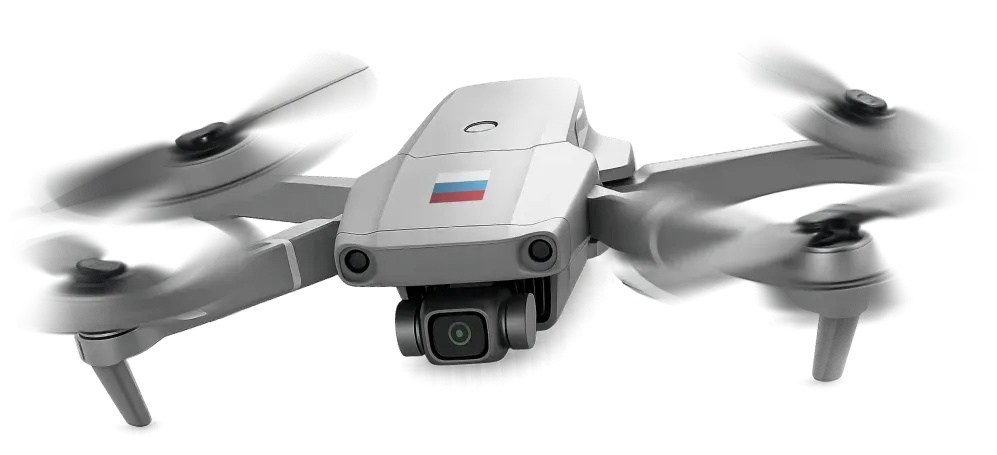
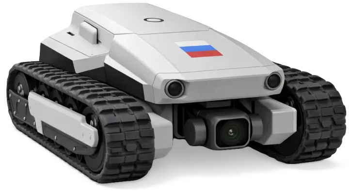
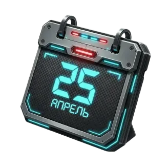
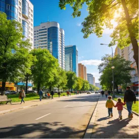

Будущее за управлением беспилотными системами





Способные пилотировать, конструировать и программировать дроны станут новой движущей силой экономики страны. Эти умения открывают доступ к широкому спектру отраслей, где технологии заменяют или существенно дополняют традиционные методы работы.
одна из самых востребованных и ценных технологичных военных специальностей сегодня.
Операторы, инженеры, конструкторы — элита армии: важны не только физические навыки, но и мышление, внимательность, стрессоустойчивость и умение работать с техникой. Для таких ценных кадров и условия соответствующие!
Ведение аэроразведки местности, корректировка огневых средств (артиллерии), круглосуточное патрулирование территорий, фиксация правонарушений с воздуха, применение средств РЭБ для подавления несанкционированных полётов, анализ цифровых следов БПЛА на месте происшествий. Деятельность в структурах с регламентированным карьерным ростом и доступом к передовым технологическим комплексам.
Дифференцированное внесение средств защиты растений и удобрений (точное земледелие), аэромониторинг посевов, обследование лесных массивов для выявления вредителей и пожароопасных участков, патрулирование охотничьих угодий для пресечения браконьерства, учёт поголовья скота на отдаленных пастбищах и другие направления.
Операционный контроль строительных площадок, транспортировка строительных материалов и грузов на высоту, внутренняя и внешняя инспекция дымовых труб, градирен, мостов и линий электропередач, проведение инженерных изысканий для проектирования промышленных объектов.
Создание высокоточных цифровых моделей местности и 3D-моделей промышленных объектов, топографическая съёмка закрытых территорий (карьеры, полигоны), аэрогеофизическая разведка для поиска полезных ископаемых, мониторинг деформации зданий и инженерных сооружений.
Поиск пропавших людей (в том числе в условиях сложного рельефа, лесистой местности и ночью с использованием тепловизоров), оценка масштабов паводков, пожаров и разрушений в реальном времени, доставка средств спасения (спасательные жилеты, медикаменты, канаты) в зоны, недоступные для наземной техники, обеспечение связи и ретрансляция видеосигнала в зоне ЧС.
Обучение по индивидуальному графику с учётом службы в вооружённых силах
Вы сможете перейти с платной на бюджетную форму обучения
Вы можете получить второе высшее или дополнительное образование бесплатно
Ваши дети смогут поступить в наш вуз по отдельной квоте

Вы сможете получить на них ответы, воспользовавшись предложенными ниже каналами связи